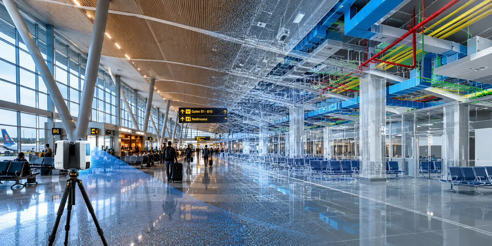

The Assignment
A major airport was planning extensive renovations and wanted to evaluate the use of a 3D digital model for energy studies, facility planning and ongoing operations.
The assignment involved laser scanning an international terminal spanning approximately 2.1 million sq ft and creating an accurate digital representation of the facility. Capturing such a large and operationally complex environment required extensive coordination with airport departments and agencies while maintaining access and security protocols.
Our Approach
CS TECH Ai carried out comprehensive reality capture of the terminal and associated facilities and transformed the captured information into a detailed 3D digital model.
The engagement included:
- Laser scanning of approximately 2.1 million sq ft of terminal space
- Reality capture of terminal buildings, parking deck and perimeter areas
- Coordination of scanning activities around complex operational and security requirements
- Processing of captured data into an accurate point cloud
- Development of a detailed 3D digital model of the facility
- Representation of HVAC, plumbing, electrical systems, infrastructure and equipment within the digital environment
- Creation of digital information to support energy studies and simulations
- Virtual access to facility information for planning, maintenance and asset management
- Support for multiple airport departments through a common visual representation of the facility
Scanning of the 2.1 million sq ft facility was completed in just over three weeks, followed by processing of the captured data and creation of the 3D model.